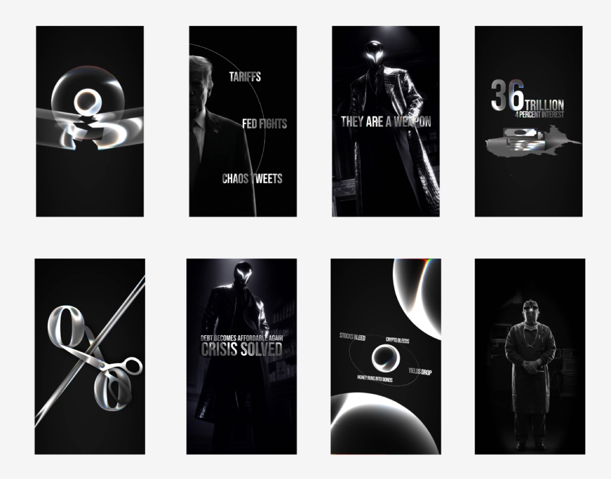

Ad + Social Campaign
The Crypteum — 400 to 34,000 followers in three months
From 400 followers to 34,000 in three months. One video to a million views. Built from scratch with the system that grew Hano Crypto.
Overview
Most crypto pages never escape their first few hundred followers. The Crypteum did it in three months. When the account came to us it had 400 followers and no traction. Twelve weeks later it sat at 34,000 — with a single video approaching a million views and a feed of reels pulling tens of thousands each.
We built it from scratch, applying the same storytelling system, topic selection, and retention engineering that grew our own brand — adapted to The Crypteum's voice: markets, macro, and the forces that move them.
The Results In Numbers
- 400 → 34k
- Followers in 3 months
- 85x
- Follower growth
- ~1M
- Views on top video
- 3 Months
- Timeline from zero
The Challenge
A new account is the hardest place to start. No audience, no momentum, no algorithmic trust — every video begins from nothing, shown to almost no one.
At 400 followers, The Crypteum had a clear point of view but no system to turn it into reach. The goal was never vanity numbers; it was a real, engaged audience around markets and macro, built fast enough to matter.
The Approach
We ran the playbook we developed on our own brand. Every video was built around a single, well-chosen story from the world of markets framed so a newcomer understands it and a serious follower respects it.
Tight scripting, engineered retention, and a consistent cinematic identity in black and silver that's recognizable in the feed before the caption even loads.
934k views · 70,100 likes · 2,071 comments
Topic selection did the heavy lifting. Instead of reacting to old news, we picked stories at the moment they were about to matter and told them in a way that made people stop, watch to the end, and follow. The watch time compounded — and the algorithm did the rest, pushing each video to people who had never heard of the account.
The Visual Identity
Reach is nothing without a look people remember, so we built The Crypteum's entire visual identity from the ground up. Each video plays out as a sequence of designed cinematic frames rather than a static post with text laid over the top — Trump rendered as a shadow, the Federal Reserve lit like a monument, the $36 trillion debt collapsing across a map, a single line of copy per frame carrying the story forward.
It is a deliberate black-and-silver film language: high contrast, restrained, premium. One designed frame flows into the next, so a sixty-second reel feels like a short film and a viewer keeps watching to see where it lands. The result is a style that is instantly recognizable in the feed and impossible to mistake for anyone else — and that recognition is exactly what turns one viral video into a following that compounds.
The Crypteum Storyboard
Design frame storyboards establishing The Crypteum's black-and-silver film visual language.

The Results
The growth was immediate and compounding. The account went from 400 to 34,000 followers in three months — an 85x increase.
The standout video reached nearly a million views with 70,100 likes and more than 2,000 comments, while follow-up reels landed 64,800 and 29,200 views, each pulling thousands of likes. That is not a single lucky hit. It is a feed that performs, video after video.
Why It Matters
The Crypteum is proof the system transfers. The same approach that built one of the largest crypto communities on Instagram took a 400-follower account to 34,000 in a single quarter. The thread is the same as everything we do: crypto expertise plus genuine craft.
And the reach became a foundation. With a real audience and a distinct identity in place, The Crypteum is now expanding into its own brand and building a private members' club — turning followers into a community and attention into something durable. That is the whole point: we don't just grow numbers, we build the platform a brand stands on.